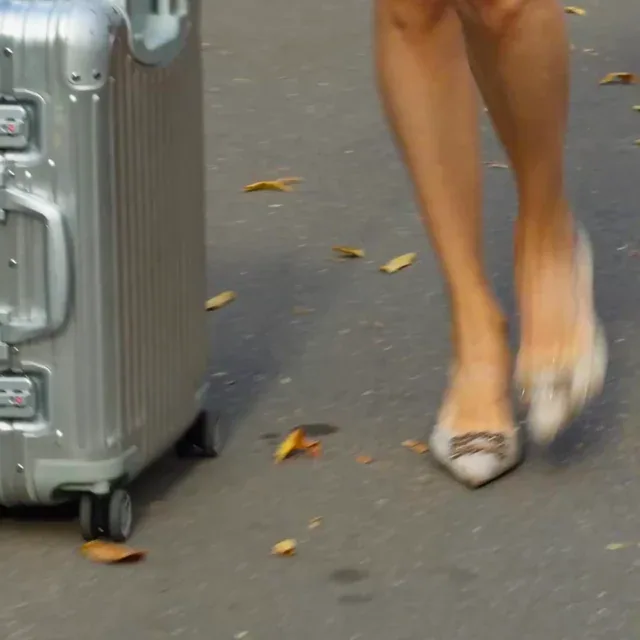
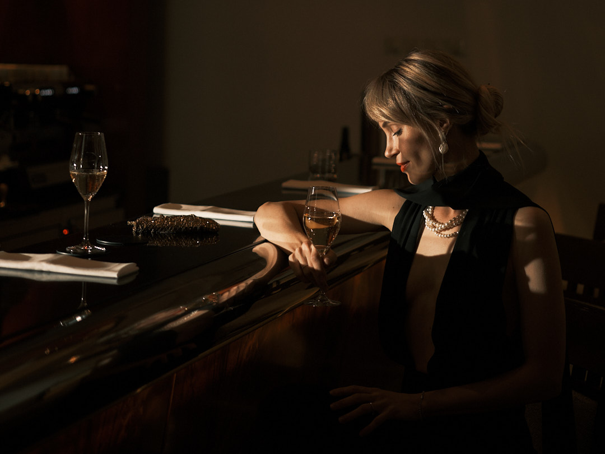
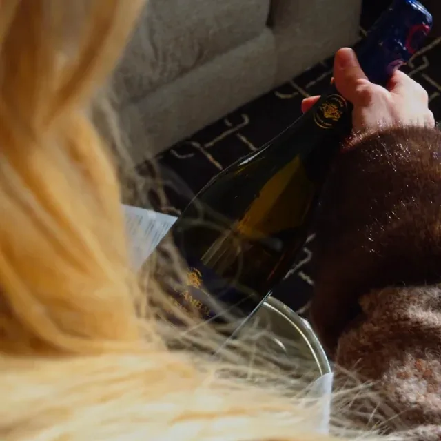
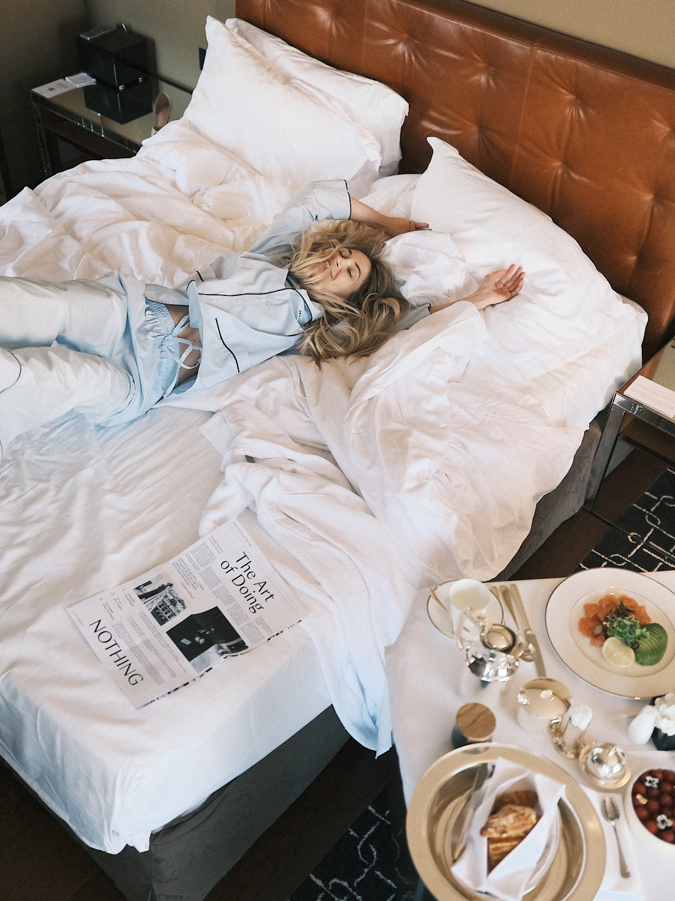
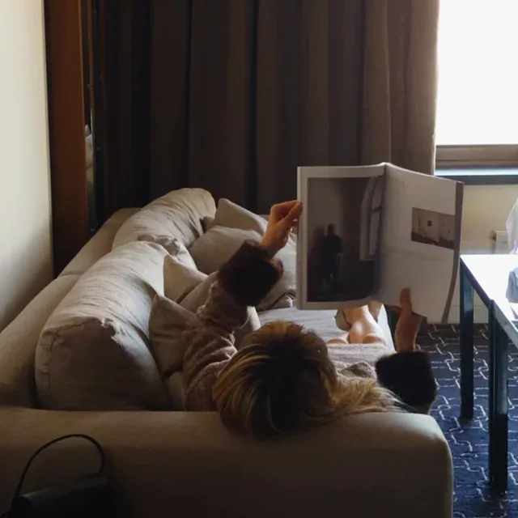
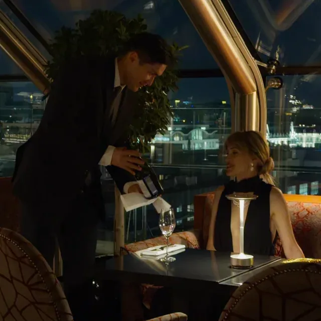
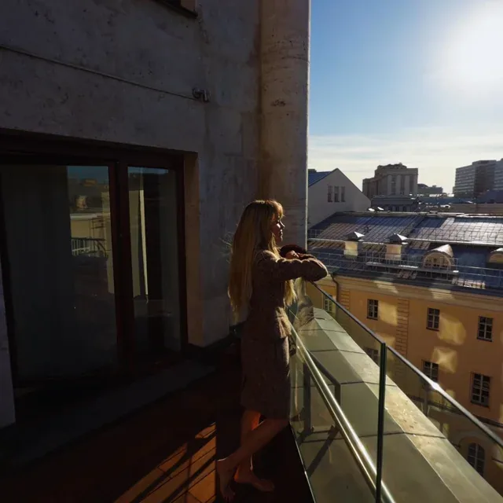

01 / 04
Приезд и первое впечатление
Первый взгляд на пространство. Багаж уже в номере, можно выдохнуть и освоиться.
Смотреть проект ↗

Мы показываем не только результат, но и то, как строится визуальная история.
Вместо выдуманного каталога — честный подробный взгляд на съёмку Ararat Park Hyatt. В ней можно увидеть разные задачи: пространство, жизнь гостя, сервис и настроение.


Номера, ресторан, город, детали и гость внутри этой истории.
Смотреть проект ↗Разные сюжеты одной съёмки помогают увидеть, какой материал можно собрать для вашего бренда.
Первый взгляд на пространство. Багаж уже в номере, можно выдохнуть и освоиться.
Смотреть проект ↗
Комната становится живой, когда в ней есть человек, свет и время для себя.
Смотреть проект ↗
Ресторан и сервис раскрываются через действия и детали, которые гость запоминает.
Смотреть проект ↗

Расскажите, что важно показать. Мы предложим с чего начать.
Обсудить съёмку